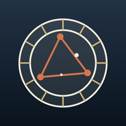

時來－星座
用白話學西洋占星，看懂自己的星盤・iPhone・繁體中文／英文
開發中，尚未上架時來－星座用白話課程教你看懂自己的西洋占星星盤，把占星當成描述自己的語言。個人星盤採 Placidus 宮位制；不知道出生時間也能用，App 會標出不確定的部分，不會畫出假的上升或宮位。
適合誰
- 完全沒有占星基礎的初學者。
- 不知道自己出生時間、但想看懂星盤的人。
- 重視隱私、不想註冊帳號的人。
- 想用中文或英文學占星的人。
課程內容
免費三堂
- 星盤是什麼
- 太陽、月亮、上升
- 十二星座的性格語言：三種動法、四元素，以及把星座當形容詞來用
主要功能
- 白話課程
- 前 3 堂免費，每一段都標明是引用原文、後世解讀、本課觀察提示、本 App 的做法，還是本課自行換算。
- 個人星盤
- 採 Placidus 宮位制，計算十大行星、上升與天頂。
- 不知道出生時間也能用
- 不會代入中午或任何假時間；只顯示整天都不會變的部分。月亮當天可能換星座時會寫「需要出生時間才能確認」，上升、天頂與宮位在輸入時間前保持空白。
- 今日星象
- 每天一個今日主題，加上工作、感情、財務各一則，並寫出是哪個行運相位觸發、正在接近或遠離，附上客觀星象與對應課程連結。
- 筆記與複習
- 可以寫筆記，回頭複習重要內容。
- 中英雙語
- 繁體中文與英文介面。
和一般命理 App 的差別
- 每段文字都標明出處類型。
- 引用的古典來源為公有領域：托勒密《Tetrabiblos》（Robbins 英譯）、William Lilly《基督教占星學》（1647），天文數據參考 NASA。
- 不知道出生時間時誠實留白，不用假時間補。
- 不打分、不排名，不用數字評比你。
- 不需要帳號，資料只存在 iPhone，App 不連網。
名詞小辭典
- 星盤
- 出生那一刻天空中行星位置的圖。
- 太陽、月亮、上升
- 星盤中最常被提到的三個位置；上升需要準確的出生時間才算得出。
- 宮位
- 把星盤分成十二個區域；本 App 採 Placidus 宮位制。
- 三種動法
- 本位、固定、變動，描述星座做事的節奏。
- 四元素
- 火、土、風、水，描述星座的氣質。
- 相位
- 兩顆行星之間的角度關係，例如合、對沖、三分、四分、六分。
免費與會員
免費：免費下載，前 3 堂課程免費。
會員：未來七日、最多五張星盤、中型小工具、每日一次摘要提醒。價格未定。
隱私
不需要帳號，資料只存在你的 iPhone，不上傳伺服器。
免費使用星座網頁版
出生星盤、今日與未來七天導讀、朋友對照，以及原 App 三十六堂課都免費開放。
不知道出生時間也能看部分星盤；上升和宮位不會亂猜。你主動儲存的資料只留在目前瀏覽器。
常見問題
- 有沒有用白話學西洋占星的 App？
- 時來－星座用白話課程教你讀自己的星盤，前 3 堂免費，不需要帳號。
- 占星初學者要從哪裡開始？
- 先了解星盤是什麼，再認識太陽、月亮與上升，接著學十二星座的三種動法和四元素，這就是 App 免費三堂的內容。
- 不知道出生時間可以用嗎？
- 可以。App 只顯示整天都不會變的部分，上升與宮位留白，不會用假時間補。
- 時來－星座是算命 App 嗎？
- 不是。它把占星當成描述自己的語言，用來學習與觀察。
- 需要上網或註冊嗎？
- 不需要帳號，資料只存在你的 iPhone，App 不連網。
時來－星座 — 用白話學西洋占星
開發中。 時來－星座以白話教你讀懂自己的西洋占星出生星盤，把占星視為描述自己的語言。星盤採普拉西德宮位制；不知道出生時間時，App 會標明無法確認的部分，不會虛構上升或宮位。
適合誰
- 完全沒有占星基礎的初學者。
- 不知道出生時間、但想讀懂星盤的人。
- 重視隱私、不想註冊帳號的人。
- 想用英文或繁體中文學習的人。
你會學到什麼
免費三堂
- 星盤是什麼
- 太陽、月亮、上升
- 十二星座的語言：本位、固定、變動，四元素，以及把星座當形容詞使用
功能
- 白話課程
- 前三堂免費。每段都標明是引用來源、後世解讀、觀察提示、App 自身做法，還是本課自行換算。
- 個人出生星盤
- 採普拉西德宮位制，提供十大行星、上升與天頂。
- 不知道出生時間也能用
- 不會代入中午或其他虛構時間，只顯示整天不變的部分。若月亮當天可能換星座，App 會說明需要出生時間才能確認。上升、天頂與宮位在輸入時間前留白。
- 今日星象
- 每日一個主題，加上工作、感情與財務各一則，顯示觸發的行運相位及正在接近或遠離，附上客觀星象與相關課程連結。
- 筆記與複習
- 可以寫筆記，回頭複習重點。
- 雙語
- 繁體中文與英文介面。
和一般命理 App 的差別
- 每段都顯示來源類型。
- 古典來源為公有領域：托勒密《占星四書》（Robbins 英譯）與 William Lilly《基督教占星學》（1647）；天文數據參考 NASA 資料表。
- 誠實留白，不代入虛構的出生時間。
- 不打分、不排名。
- 不需要帳號，資料留在 iPhone，App 可離線使用。
名詞小辭典
- 出生星盤
- 你出生那一刻行星位置的圖。
- 太陽、月亮、上升
- 最常提到的三個位置；上升需要準確出生時間。
- 宮位
- 把星盤分成十二個區域；本 App 採 Placidus 宮位制。
- 三種動法
- 本位、固定、變動，代表星座的節奏。
- 元素
- 火、土、風、水，代表星座的氣質。
- 相位
- 行星間的角度，例如合相、對沖、三分、四分與六分。
免費與會員
免費： 免費下載，前三堂免費。
會員： 未來七日、最多五張星盤、中型小工具與每日一次摘要通知。價格未定。
隱私說明
不需要帳號。資料留在你的 iPhone，不會上傳伺服器。
常見問題
- 有沒有用白話學西洋占星的 App？
- 時來－星座透過白話課程教你讀自己的出生星盤。前三堂免費，不需要帳號。
- 占星初學者要從哪裡開始？
- 先了解星盤，再認識太陽、月亮與上升，接著學十二星座的動法與元素，正是免費三堂的內容。
- 不知道出生時間可以用嗎？
- 可以。App 只顯示整天不變的部分，上升與宮位留白，不會亂猜。
- 這是算命嗎？
- 不是。它把占星當成描述自己的語言，用來學習與反思。